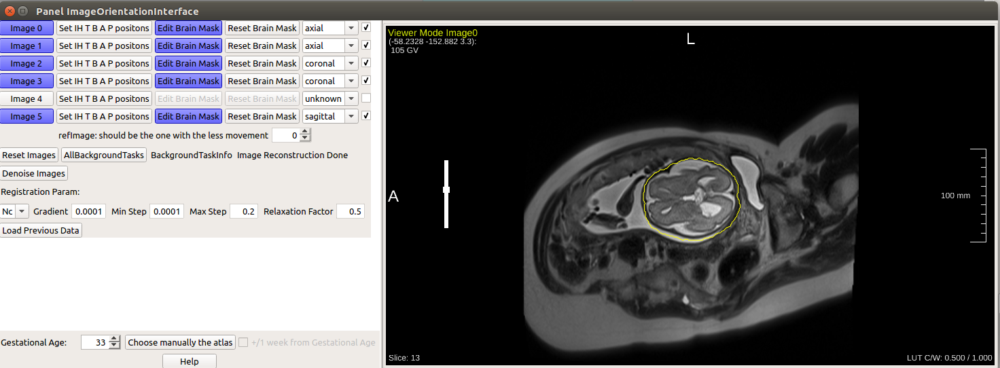
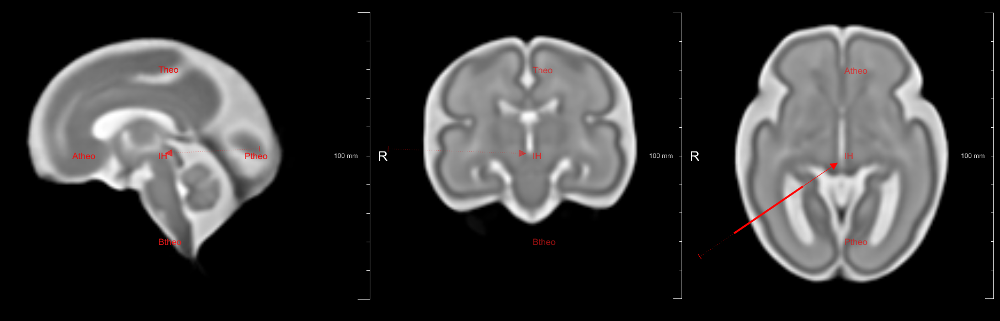

ImageOrientationInterface¶
-
MacroModule¶ author FetalMRIpackage CHUV/FetalMRIdefinition ImageOrientationInterface.def
Purpose
Load all low resolution images, reorient them, perform the brain mask and do all preliminary steps to get the first Scatter Data Interpolation
Windows
ImageOrientationPanel¶
Button Description¶
ImageX
Show the image number x. if not already loaded, open a file browser to select a nifti image and load it as image x
Set IH T B A P positions
When Click the yellow title on the image becomes "Set Positioning Mode". If you click on others button it may reinitialize in Viewing mode. it will be shown on this yellow title.
You have to select the few anatomical points (there is no specific order to do it:
-The Posterior Comissure: put the mouse cursor on top of it and press I on the keyboard
-A top inter hemispheric brain position: put the mouse cursor on top of it and press T on the keyboard
-A bottom inter hemispheric brain position: put the mouse cursor on top of it and press B on the keyboard
-A antero inter hemispheric brain position: put the mouse cursor on top of it and press A on the keyboard
-A postero inter hemispheric brain position: put the mouse cursor on top of it and press P on the keyboard
Press Enter to validate the positions
if the brain mask is completely off you can reedit the anatomical positions by pressing again the button and change only some of the positions
Positioning of IH
Edit Brain Mask
(enabled only if anatomical positions of the corresponding image is set. enter automatically in this mode just after having set the anatomical points)
The Orientation of the stack has to be set already(comboBox Orientation described below)
-you can move the current slice maks by pressing 2,8,4,6,1,9 to move the mask in the top/bottom,antero/posterior axes and rotate it along the orthogonal axis.
-you can modify the mask by redrawing it using the mouse. it you start from outside the mask and go inside, it will remove the intersection.
if you start from inside and go outside it will do the union
-you can remove completly the current mask by pressing backspace once the mouse is over it. and start a new mask by drawing it just after
Press Enter to Validate
Reset Brain Mask
go back to the mask done only using anatomical positions set by "Set IH T B A P positions" and gestational Age
Orientation Combo Box
Orientation of the Fetus :4 possible values: unknown (by default), axial, sagittal, coronal.
Best if done before doing anything else
refImage
To define which image is gonna be used as reference. When created the SDI, the reference image is used to generate the first base of the high resolution image.
All other low resolution images will be projected on it.
It must be the best quality image, with the less movement between slices
Input Fields¶
inImageInfos¶
-
name:inImageInfos, type:MLBase¶
This field is used in the Frontier Version of the software. inImageInfos is then filled after studies selection from the MRPatientBrowser. if the module is used outside frontier, when clicking on the ImageX button it will open a "FileBrowser interface" to select .nii files on the computer.
Output Fields¶
outImagesInfosStep1¶
-
name:outImagesInfosStep1, type:MLBase¶
For connexion with SDIVerification Interface : SDIVerificationInterface
Parameter Fields¶
Field Index¶
AtlasImage: String |
Gestational Age: Integer |
RegistrationMinStep: Double |
AtlasPath: String |
increaseNbImage: Trigger |
RegistrationRelaxationFactor: Double |
BackgroundTaskRunning: Bool |
NumberImages: Integer |
resetAll: Trigger |
decreaseNbImage: Trigger |
pathImages: String |
resetZoomButton: Trigger |
eventChoice: Integer |
RefImageFiled: Integer |
StatusField: String |
ExpertMode: Bool |
RegistrationGradient: Double |
StopBackgroundTask: Bool |
FieldPresentRegistration: String |
RegistrationMaxStep: Double |
WaitForReconstruction: Bool |
fileSelectionCompleted: Trigger |
RegistrationMetric: Enum |
Visible Fields¶
Gestational Age¶
-
name:GestationalAge, type:Integer, default:33, minimum:21, maximum:37¶
Doesn't have to match the real gestational age. it is used for the semi automastic masking of the brain. the initial mask is the one done on the data from A. Gholipour et al. atlas of the corresponding gestational age. The mask based on the atlas are made using the module generateTemplateMask : generateTemplateMask. The atlas used to generate the mask on the Frontier Version of the software is the one 2017 one.